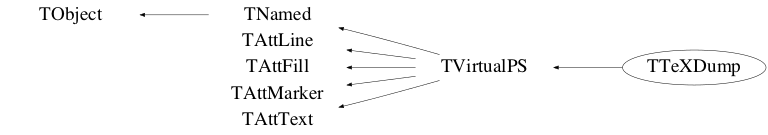

class TTeXDump: public TVirtualPS
TTeXDump: Graphics interface to TeX
PGF is a TeX macro package for generating graphics. It is platform and format-independent and works together with the most important TeX backend drivers, including pdftex and dvips. It comes with a user-friendly syntax layer called TikZ.
To generate a such file it is enough to do:
gStyle->SetPaperSize(10.,10.);
hpx->Draw();
gPad->Print("hpx.tex");
Then, the generated file (hpx.tex) can be included in a LaTeX document (simple.tex) in the following way:
\documentclass{article}
\usepackage{tikz}
\usetikzlibrary{patterns}
\usetikzlibrary{plotmarks}
\title{A simple LaTeX example}
\date{July 2013}
\begin{document}
\maketitle
The following image as been generated using the TTeXDump class:
\par
\input{hpx.tex}
\end{document}
Note the three directives needed at the top of the LaTeX file:
\usepackage{tikz}
\usetikzlibrary{patterns}
\usetikzlibrary{plotmarks}
Then including the picture in the document is done with the
\input<\tt> directive.
The command pdflatex simple.tex will generate the corresponding pdf file simple.pdf.
Function Members (Methods)
public:
| TTeXDump() | |
| TTeXDump(const char* filename, Int_t type = -113) | |
| virtual | ~TTeXDump() |
| void | TObject::AbstractMethod(const char* method) const |
| virtual void | TObject::AppendPad(Option_t* option = "") |
| virtual void | TObject::Browse(TBrowser* b) |
| virtual void | CellArrayBegin(Int_t W, Int_t H, Double_t x1, Double_t x2, Double_t y1, Double_t y2) |
| virtual void | CellArrayEnd() |
| virtual void | CellArrayFill(Int_t r, Int_t g, Int_t b) |
| static TClass* | Class() |
| virtual const char* | TObject::ClassName() const |
| virtual void | TNamed::Clear(Option_t* option = "") |
| virtual TObject* | TNamed::Clone(const char* newname = "") const |
| virtual void | Close(Option_t* opt = "") |
| Int_t | CMtoTeX(Double_t u) |
| virtual Int_t | TNamed::Compare(const TObject* obj) const |
| virtual void | TNamed::Copy(TObject& named) const |
| void | DefineMarkers() |
| virtual void | TObject::Delete(Option_t* option = "")MENU |
| Int_t | TAttLine::DistancetoLine(Int_t px, Int_t py, Double_t xp1, Double_t yp1, Double_t xp2, Double_t yp2) |
| virtual Int_t | TObject::DistancetoPrimitive(Int_t px, Int_t py) |
| virtual void | TObject::Draw(Option_t* option = "") |
| virtual void | DrawBox(Double_t x1, Double_t y1, Double_t x2, Double_t y2) |
| virtual void | TObject::DrawClass() constMENU |
| virtual TObject* | TObject::DrawClone(Option_t* option = "") constMENU |
| virtual void | DrawFrame(Double_t xl, Double_t yl, Double_t xt, Double_t yt, Int_t mode, Int_t border, Int_t dark, Int_t light) |
| void | DrawPolyLine(Int_t n, TPoints* xy) |
| void | DrawPolyLineNDC(Int_t n, TPoints* uv) |
| virtual void | DrawPolyMarker(Int_t n, Float_t* x, Float_t* y) |
| virtual void | DrawPolyMarker(Int_t n, Double_t* x, Double_t* y) |
| virtual void | DrawPS(Int_t n, Float_t* xw, Float_t* yw) |
| virtual void | DrawPS(Int_t n, Double_t* xw, Double_t* yw) |
| virtual void | TObject::Dump() constMENU |
| virtual void | TObject::Error(const char* method, const char* msgfmt) const |
| virtual void | TObject::Execute(const char* method, const char* params, Int_t* error = 0) |
| virtual void | TObject::Execute(TMethod* method, TObjArray* params, Int_t* error = 0) |
| virtual void | TObject::ExecuteEvent(Int_t event, Int_t px, Int_t py) |
| virtual void | TObject::Fatal(const char* method, const char* msgfmt) const |
| virtual void | TNamed::FillBuffer(char*& buffer) |
| virtual TObject* | TObject::FindObject(const char* name) const |
| virtual TObject* | TObject::FindObject(const TObject* obj) const |
| virtual Option_t* | TObject::GetDrawOption() const |
| static Long_t | TObject::GetDtorOnly() |
| virtual Color_t | TAttFill::GetFillColor() const |
| virtual Style_t | TAttFill::GetFillStyle() const |
| virtual const char* | TObject::GetIconName() const |
| virtual Color_t | TAttLine::GetLineColor() const |
| virtual Style_t | TAttLine::GetLineStyle() const |
| virtual Width_t | TAttLine::GetLineWidth() const |
| virtual Color_t | TAttMarker::GetMarkerColor() const |
| virtual Size_t | TAttMarker::GetMarkerSize() const |
| virtual Style_t | TAttMarker::GetMarkerStyle() const |
| virtual const char* | TNamed::GetName() const |
| virtual char* | TObject::GetObjectInfo(Int_t px, Int_t py) const |
| static Bool_t | TObject::GetObjectStat() |
| virtual Option_t* | TObject::GetOption() const |
| virtual void* | TVirtualPS::GetStream() const |
| virtual Short_t | TAttText::GetTextAlign() const |
| virtual Float_t | TAttText::GetTextAngle() const |
| virtual Color_t | TAttText::GetTextColor() const |
| virtual Font_t | TAttText::GetTextFont() const |
| virtual Float_t | TAttText::GetTextSize() const |
| virtual const char* | TNamed::GetTitle() const |
| virtual Int_t | TVirtualPS::GetType() const |
| virtual UInt_t | TObject::GetUniqueID() const |
| virtual Bool_t | TObject::HandleTimer(TTimer* timer) |
| virtual ULong_t | TNamed::Hash() const |
| virtual void | TObject::Info(const char* method, const char* msgfmt) const |
| virtual Bool_t | TObject::InheritsFrom(const char* classname) const |
| virtual Bool_t | TObject::InheritsFrom(const TClass* cl) const |
| virtual void | TObject::Inspect() constMENU |
| void | TObject::InvertBit(UInt_t f) |
| virtual TClass* | IsA() const |
| virtual Bool_t | TObject::IsEqual(const TObject* obj) const |
| virtual Bool_t | TObject::IsFolder() const |
| Bool_t | TObject::IsOnHeap() const |
| virtual Bool_t | TNamed::IsSortable() const |
| virtual Bool_t | TAttFill::IsTransparent() const |
| Bool_t | TObject::IsZombie() const |
| virtual void | TNamed::ls(Option_t* option = "") const |
| void | TObject::MayNotUse(const char* method) const |
| virtual void | TAttLine::Modify() |
| virtual void | NewPage() |
| virtual Bool_t | TObject::Notify() |
| void | TObject::Obsolete(const char* method, const char* asOfVers, const char* removedFromVers) const |
| void | Off() |
| void | On() |
| virtual void | Open(const char* filename, Int_t type = -111) |
| static void | TObject::operator delete(void* ptr) |
| static void | TObject::operator delete(void* ptr, void* vp) |
| static void | TObject::operator delete[](void* ptr) |
| static void | TObject::operator delete[](void* ptr, void* vp) |
| void* | TObject::operator new(size_t sz) |
| void* | TObject::operator new(size_t sz, void* vp) |
| void* | TObject::operator new[](size_t sz) |
| void* | TObject::operator new[](size_t sz, void* vp) |
| TNamed& | TNamed::operator=(const TNamed& rhs) |
| virtual void | TObject::Paint(Option_t* option = "") |
| virtual void | TObject::Pop() |
| virtual void | TNamed::Print(Option_t* option = "") const |
| virtual void | TVirtualPS::PrintFast(Int_t nch, const char* string = "") |
| virtual void | TVirtualPS::PrintRaw(Int_t len, const char* str) |
| virtual void | TVirtualPS::PrintStr(const char* string = "") |
| void | Range(Float_t xrange, Float_t yrange) |
| virtual Int_t | TObject::Read(const char* name) |
| virtual void | TObject::RecursiveRemove(TObject* obj) |
| virtual void | TAttFill::ResetAttFill(Option_t* option = "") |
| virtual void | TAttLine::ResetAttLine(Option_t* option = "") |
| virtual void | TAttMarker::ResetAttMarker(Option_t* toption = "") |
| virtual void | TAttText::ResetAttText(Option_t* toption = "") |
| void | TObject::ResetBit(UInt_t f) |
| virtual void | TObject::SaveAs(const char* filename = "", Option_t* option = "") constMENU |
| virtual void | TAttFill::SaveFillAttributes(ostream& out, const char* name, Int_t coldef = 1, Int_t stydef = 1001) |
| virtual void | TAttLine::SaveLineAttributes(ostream& out, const char* name, Int_t coldef = 1, Int_t stydef = 1, Int_t widdef = 1) |
| virtual void | TAttMarker::SaveMarkerAttributes(ostream& out, const char* name, Int_t coldef = 1, Int_t stydef = 1, Int_t sizdef = 1) |
| virtual void | TObject::SavePrimitive(ostream& out, Option_t* option = "") |
| virtual void | TAttText::SaveTextAttributes(ostream& out, const char* name, Int_t alidef = 12, Float_t angdef = 0, Int_t coldef = 1, Int_t fondef = 61, Float_t sizdef = 1) |
| void | TObject::SetBit(UInt_t f) |
| void | TObject::SetBit(UInt_t f, Bool_t set) |
| void | SetColor(Int_t color = 1) |
| virtual void | SetColor(Float_t r, Float_t g, Float_t b) |
| virtual void | TObject::SetDrawOption(Option_t* option = "")MENU |
| static void | TObject::SetDtorOnly(void* obj) |
| virtual void | TAttFill::SetFillAttributes()MENU |
| virtual void | SetFillColor(Color_t cindex = 1) |
| virtual void | TAttFill::SetFillColorAlpha(Color_t fcolor, Float_t falpha) |
| virtual void | TAttFill::SetFillStyle(Style_t fstyle) |
| virtual void | TAttLine::SetLineAttributes()MENU |
| virtual void | SetLineColor(Color_t cindex = 1) |
| virtual void | TAttLine::SetLineColorAlpha(Color_t lcolor, Float_t lalpha) |
| void | SetLineScale(Float_t scale = 1) |
| virtual void | SetLineStyle(Style_t linestyle = 1) |
| virtual void | SetLineWidth(Width_t linewidth = 1) |
| virtual void | TAttMarker::SetMarkerAttributes()MENU |
| virtual void | SetMarkerColor(Color_t cindex = 1) |
| virtual void | TAttMarker::SetMarkerColorAlpha(Color_t mcolor, Float_t malpha) |
| virtual void | SetMarkerSize(Size_t msize = 1) |
| virtual void | TAttMarker::SetMarkerStyle(Style_t mstyle = 1) |
| virtual void | TNamed::SetName(const char* name)MENU |
| virtual void | TNamed::SetNameTitle(const char* name, const char* title) |
| static void | TObject::SetObjectStat(Bool_t stat) |
| virtual void | TVirtualPS::SetStream(ofstream* os) |
| virtual void | TAttText::SetTextAlign(Short_t align = 11) |
| virtual void | TAttText::SetTextAngle(Float_t tangle = 0)MENU |
| virtual void | TAttText::SetTextAttributes()MENU |
| virtual void | SetTextColor(Color_t cindex = 1) |
| virtual void | TAttText::SetTextColorAlpha(Color_t tcolor, Float_t talpha) |
| virtual void | TAttText::SetTextFont(Font_t tfont = 62) |
| virtual void | TAttText::SetTextSize(Float_t tsize = 1) |
| virtual void | TAttText::SetTextSizePixels(Int_t npixels) |
| virtual void | TNamed::SetTitle(const char* title = "")MENU |
| virtual void | TVirtualPS::SetType(Int_t = -111) |
| virtual void | TObject::SetUniqueID(UInt_t uid) |
| virtual void | ShowMembers(TMemberInspector&) |
| virtual Int_t | TNamed::Sizeof() const |
| virtual void | Streamer(TBuffer&) |
| void | StreamerNVirtual(TBuffer& ClassDef_StreamerNVirtual_b) |
| virtual void | TObject::SysError(const char* method, const char* msgfmt) const |
| Bool_t | TObject::TestBit(UInt_t f) const |
| Int_t | TObject::TestBits(UInt_t f) const |
| virtual void | Text(Double_t x, Double_t y, const char* string) |
| virtual void | Text(Double_t, Double_t, const wchar_t*) |
| void | TextNDC(Double_t u, Double_t v, const char* string) |
| void | TextNDC(Double_t, Double_t, const wchar_t*) |
| virtual void | TObject::UseCurrentStyle() |
| Float_t | UtoTeX(Double_t u) |
| Float_t | VtoTeX(Double_t v) |
| virtual void | TObject::Warning(const char* method, const char* msgfmt) const |
| virtual Int_t | TObject::Write(const char* name = 0, Int_t option = 0, Int_t bufsize = 0) |
| virtual Int_t | TObject::Write(const char* name = 0, Int_t option = 0, Int_t bufsize = 0) const |
| virtual void | TVirtualPS::WriteInteger(Int_t i, Bool_t space = kTRUE) |
| virtual void | TVirtualPS::WriteReal(Float_t r, Bool_t space = kTRUE) |
| Float_t | XtoTeX(Double_t x) |
| Float_t | YtoTeX(Double_t y) |
protected:
| virtual void | TObject::DoError(int level, const char* location, const char* fmt, va_list va) const |
| void | TObject::MakeZombie() |
Data Members
public:
| enum TObject::EStatusBits { | kCanDelete | |
| kMustCleanup | ||
| kObjInCanvas | ||
| kIsReferenced | ||
| kHasUUID | ||
| kCannotPick | ||
| kNoContextMenu | ||
| kInvalidObject | ||
| }; | ||
| enum TObject::[unnamed] { | kIsOnHeap | |
| kNotDeleted | ||
| kZombie | ||
| kBitMask | ||
| kSingleKey | ||
| kOverwrite | ||
| kWriteDelete | ||
| }; |
protected:
| Bool_t | fBoundingBox | True when the Tex header is printed |
| char* | TVirtualPS::fBuffer | File buffer |
| Float_t | fCurrentAlpha | Current Alpha value |
| Float_t | fCurrentBlue | Current Blue component |
| Float_t | fCurrentGreen | Current Green component |
| Float_t | fCurrentRed | Current Red component |
| Color_t | TAttFill::fFillColor | fill area color |
| Style_t | TAttFill::fFillStyle | fill area style |
| const char* | TVirtualPS::fImplicitCREsc | Escape symbol before enforced new line |
| Int_t | TVirtualPS::fLenBuffer | Buffer length |
| Color_t | TAttLine::fLineColor | line color |
| Float_t | fLineScale | Line width scale factor |
| Style_t | TAttLine::fLineStyle | line style |
| Width_t | TAttLine::fLineWidth | line width |
| Color_t | TAttMarker::fMarkerColor | Marker color index |
| Size_t | TAttMarker::fMarkerSize | Marker size |
| Style_t | TAttMarker::fMarkerStyle | Marker style |
| Int_t | TVirtualPS::fNByte | Number of bytes written in the file (PDF) |
| TString | TNamed::fName | object identifier |
| Bool_t | TVirtualPS::fPrinted | True when a page must be printed |
| Bool_t | fRange | True when a range has been defined |
| Int_t | TVirtualPS::fSizBuffer | Buffer size |
| ofstream* | TVirtualPS::fStream | File stream identifier |
| Short_t | TAttText::fTextAlign | Text alignment |
| Float_t | TAttText::fTextAngle | Text angle |
| Color_t | TAttText::fTextColor | Text color index |
| Font_t | TAttText::fTextFont | Text font number |
| Float_t | TAttText::fTextSize | Text size |
| TString | TNamed::fTitle | object title |
| Int_t | fType | Workstation type used to know if the Tex is open |
| Float_t | fXsize | Page size along X |
| Float_t | fYsize | Page size along Y |
Class Charts



Function documentation
TTeXDump(const char* filename, Int_t type = -113)
Initialize the TeX interface fname : TeX file name wtype : TeX workstation type. Not used in the TeX driver. But as TTeXDump inherits from TVirtualPS it should be kept. Anyway it is not necessary to specify this parameter at creation time because it has a default value (which is ignore in the TeX case).
void DrawFrame(Double_t xl, Double_t yl, Double_t xt, Double_t yt, Int_t mode, Int_t border, Int_t dark, Int_t light)
Draw a Frame around a box mode = -1 the box looks as it is behind the screen mode = 1 the box looks as it is in front of the screen border is the border size in already pre-computed TeX units dark is the color for the dark part of the frame light is the color for the light part of the frame
void DrawPolyLine(Int_t n, TPoints* xy)
void DrawPolyLineNDC(Int_t n, TPoints* uv)
void DrawPS(Int_t n, Double_t* xw, Double_t* yw)
This function defines a path with xw and yw and draw it according the value of nn: If nn>0 a line is drawn. If nn<0 a closed polygon is drawn.
void SetLineStyle(Style_t linestyle = 1)
Change the line style
linestyle = 2 dashed
= 3 dotted
= 4 dash-dotted
= else solid (1 in is used most of the time)
void SetColor(Float_t r, Float_t g, Float_t b)
Set color with its R G B components r: % of red in [0,1] g: % of green in [0,1] b: % of blue in [0,1]
void Text(Double_t x, Double_t y, const char* string)
Draw text xx: x position of the text yy: y position of the text chars: text to be drawn
void CellArrayBegin(Int_t W, Int_t H, Double_t x1, Double_t x2, Double_t y1, Double_t y2)
Begin the Cell Array painting